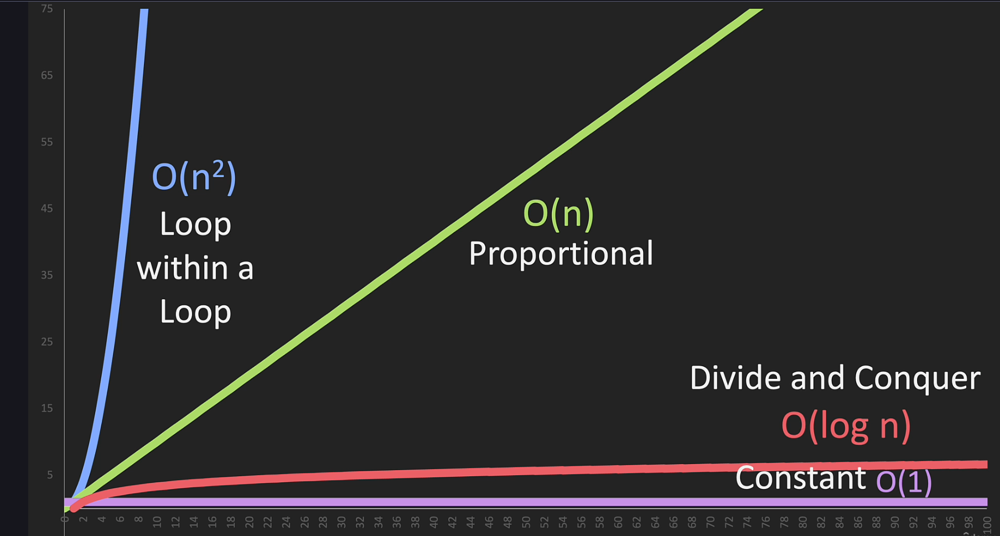

Big O
Table of Contents

1. Types
1.1. O(1): Constant Time
Doesn't depend on the size of the data set. Example: Accessing an array element by its index.
1.2. O(log n): Logarithmic Time (Divide and Conquer)
Splits the data in each step (divide and conquer). Example: Binary search.
1.3. O(n): Linear Time (Proportional)
Directly proportional to the data set size. Example: Looping through an array.
1.4. O(n log n): Linearithmic Time
Splits and sorts or searches data. Example: Merge sort, quick sort.
1.5. O(n2): Polynomial Time
Nested loops for each power of n. Example: Bubble Sort O(n2).
1.6. Notation
1.6.1. Omega (Ω) - Lower Bound
- What it means: Omega (Ω) describes the best-case scenario for an algorithm.
- In simple terms: It tells you the fastest an algorithm can run in the best circumstances.
1.6.2. Theta (Θ) - Tight Bound
- In simple terms: It tells you what to generally expect in terms of time complexity.
1.6.3. Big O (O) - Upper Bound (Worst Case)
- What it means: Big O (O) describes the worst-case scenario for an algorithm.
- In simple terms: It tells you the slowest an algorithm can run in the worst circumstances.
2. Useful Tips
- Best Case, Average Case, Worst Case
- Consider all scenarios when analysing.
- Drop Non-Dominant Terms
- In O(n2 + n), focus on O(n2) as it will dominate for large n.
- Drop Constants
- O(2n) simplifies to O(n).